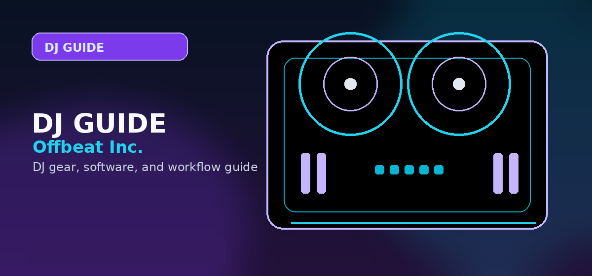

DJ Skills and Performance Hub
A structured post-setup hub for mixing, beatmatching, recording mixes, publishing DJ mixes, promotion, and getting DJ gigs.

A structured post-setup hub for mixing, beatmatching, recording mixes, publishing DJ mixes, promotion, and getting DJ gigs.
What this hub fixes
This hub connects the next phase after setup: learning core DJ skills, recording cleaner mixes, preparing for gigs, and turning practice time into finished sets you can share or perform.
How to Mix Music for Beginners
Basic phrasing, cueing, transitions, EQ, and practice structure.
Learn mixing → FoundationHow to Beatmatch Manually
Manual tempo matching before relying on sync as a crutch.
Practice beatmatching → PublishingHow to Record a DJ Mix
Signal routing, levels, file prep, and simple recording workflows.
Record a mix → DistributionHow to Create DJ Mixes for YouTube
Video formatting, copyright risk, presentation, and upload workflow.
Publish a mix → PromotionHow to Promote DJ Mixes
Turn recorded mixes into proof of taste and booking material.
Promote mixes → BusinessHow to Get DJ Gigs
Move from practice output to rooms, events, and repeat bookings.
Find gigs →Recommended learning order
| Stage | Page | Outcome |
|---|---|---|
| 1 | Mix music for beginners | Learn phrase-aware transitions and basic EQ. |
| 2 | Beatmatch manually | Stop depending blindly on sync and learn tempo discipline. |
| 3 | Record a DJ mix | Create objective evidence of progress. |
| 4 | Upload mixes to YouTube | Publish carefully with format and copyright awareness. |
| 5 | Get DJ gigs | Use mixes and local proof to get booked. |
Performance skills after the first setup
This hub sits after the gear and software decision. Once a beginner can load tracks, cue cleanly, and hear a proper headphone mix, the next goal is performance skill: phrasing, beatmatching, EQ transitions, recording mixes, and eventually playing for real listeners.
Build clean transitions
Practice phrasing and EQ movement before relying on effects or fast cuts.
Record and review
Listening back exposes timing, volume, and song-selection problems that are easy to miss while mixing.
Prepare for gigs
Paid events require backups, communication, library preparation, and reliable setup habits.
Practical checklist before you decide
Use this page as one part of the decision, not the whole decision. Confirm the current price, software compatibility, operating-system support, and whether the option still fits the way you actually practice or perform.
- Fit: choose the option that matches your current workflow and the setup you expect to use for the next year.
- Compatibility: verify exact hardware, app, subscription, and file-format requirements before buying or switching.
- Reliability: avoid workflows that depend on one fragile adapter, one unstable app version, or an internet connection with no backup.
- Upgrade path: favor tools that can grow with you instead of forcing another purchase as soon as you start recording mixes or playing longer sets.
How to use this guide in a real DJ setup
Before changing gear, software, or workflow, connect the recommendation to an actual use case: home practice, recorded mixes, streaming, mobile events, club preparation, or production crossover. A choice that looks best on paper can still be wrong if it adds setup friction or does not match the way you will play.
The safest workflow is to test the setup exactly as you will use it, then document the cable path, software version, library source, and backup plan. That prevents most of the avoidable failures that happen when DJs buy the right-looking tool but never validate the whole system.
Official product and support pages
Use these official pages to confirm current specifications, software compatibility, and support details before buying.
Frequently Asked Questions
What skill should I practice after buying DJ gear?
Start with cueing, phrase counting, beatmatching, EQ, and recording short mixes. Effects, scratching, and complex transitions should come after clean basic blends.
How do I know whether I am improving?
Record practice sets and listen back for timing drift, volume jumps, clashing vocals, and messy exits. Improvement is easiest to measure when you compare recordings over time.
Should beginners learn manual beatmatching?
Yes. Even if you use sync later, manual beatmatching teaches timing, phrasing, and recovery skills that matter when beatgrids are wrong or gear behaves unexpectedly.
When should I start looking for gigs?
Start once you can prepare a reliable set, recover from mistakes, and record a clean mix that represents the style you want to play publicly.
How to move through the skills hub
Use this hub as a sequence, not a menu. Learn basic mixing first, then manual beatmatching, then recording, then publishing, then gig preparation. Each step creates evidence that the previous step is working: a cleaner transition, a steadier beatmatch, a better recording, or a more professional set submission.